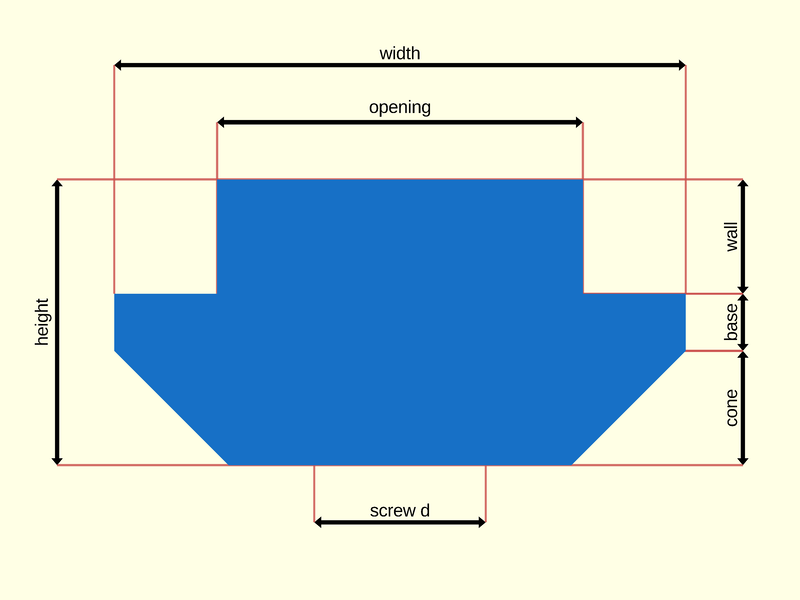
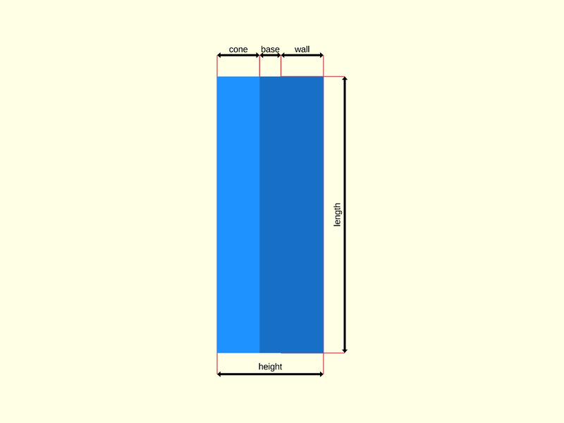

package artifacts/t-nut
Dependencies
graph LR
A1[artifacts/t-nut] --o|include| A2[foundation/dimensions]
A1 --o|include| A3[foundation/unsafe_defs]
A1 --o|include| A4[vitamins/countersinks]
A1 --o|include| A5[vitamins/screw]
A1 --o|use| A6[foundation/3d-engine]
A1 --o|use| A7[foundation/bbox-engine]
A1 --o|use| A8[foundation/hole-engine]
A1 --o|use| A9[foundation/mngm-engine]T-slot nut engine for OpenSCAD Foundation Library.
T-slot nuts are used with T-slot structural framing to build a variety of industrial structures and machines.
T-slot nut are not to be confused with T-nuts.
Copyright © 2021, Giampiero Gabbiani giampiero@gabbiani.org
SPDX-License-Identifier: GPL-3.0-or-later
Variables
variable FL_TNUT_DICT
Default:
[FL_TNUT_M3_CS,FL_TNUT_M4_CS,FL_TNUT_M5_CS,FL_TNUT_M6_CS]
variable FL_TNUT_M3_CS
Default:
fl_TNut(opening=6,size=[10,20],thickness=[1,1,2],nop_screw=M3_cs_cap_screw)
variable FL_TNUT_M3_SM
Default:
fl_TNut(opening=6,size=[10,20],thickness=[2,1,2],nop_screw=M3_cs_cap_screw)
variable FL_TNUT_M4_CS
Default:
fl_TNut(opening=6,size=[10,20],thickness=[1,1.7,2],nop_screw=M4_cs_cap_screw)
variable FL_TNUT_M5_CS
Default:
fl_TNut(opening=6,size=[10,20],thickness=[1,2.2,1.5],nop_screw=M5_cs_cap_screw)
variable FL_TNUT_M6_CS
Default:
fl_TNut(opening=8,size=[18.6,20],thickness=[1.9,1.3,5.3],nop_screw=M6_cs_cap_screw)
variable FL_TNUT_NS
Default:
"tnut"
namespace
Functions
function fl_TNut
Syntax:
Constructor returning a T-slot nut.
TOP VIEW:

RIGHT VIEW:

Parameters:
opening
the opening of the T-slot
size
2d size in the form [width (X size), length (Z size)], the height (Y size)
being calculated from «thickness».
The resulting bounding box is: [width, ∑ thickness, length]
thickness
section heights passed as [wall,base,cone] thicknesses
nop_screw
an optional screw determining a hole
knut
eventual knurl nut
holes
list of user defined holes usually positioned on the 'opening' side
function fl_tnut_height
Syntax:
The height of a t-nut decomposed in its three components: wall, base, cone.
The sum of the three components is always equal to the fl_height() of the
t-nut, so conforming to the following assertion
assert(fl_accum(fl_tnut_height(tnut))==fl_height(tnut))
function fl_tnut_select
Syntax:
Selects the T-slot nuts from a dictionary matching the screw or a generic nominal ⌀. When the «best» function literal is defined, it is applied to the result for further filtering.
Parameters:
nop_screw
screw specs to fit into
nominal
nominal ⌀
best
function literal to select the best match (defaults to the first match)
:memo: NOTE: when undefined the result is always a list of all matching T-slot nuts. Otherwise the result type (list or single nut) depends on the implementation of the provided function literal.
Modules
module fl_tnut
Syntax:
fl_tnut(verbs=FL_ADD,type,tolerance=0,countersink=false,dri_thick=0,octant,direction)
T-slot nut engine.
See fl_hole_Context{} for context variables passed to children() during FL_LAYOUT.
Parameters:
verbs
supported verbs: FL_ADD, FL_AXES, FL_ASSEMBLY, FL_BBOX, FL_DRILL, FL_FOOTPRINT, FL_LAYOUT, FL_MOUNT
tolerance
tolerances added to [nut, hole, countersink] dimensions
tolerance=x means [x,x,x]
dri_thick
scalar thickness for FL_DRILL
octant
when undef native positioning is used
direction
desired direction [director,rotation], native direction when undef ([+Z,0])